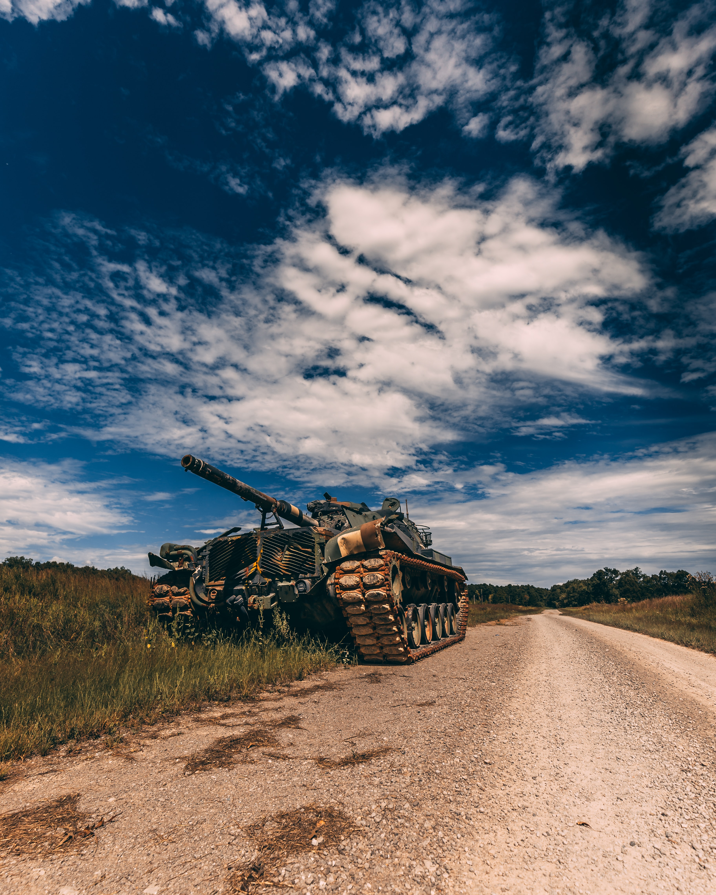

중세 후기 보헤미아 사람들은, 전쟁에서 아군의 피해를 줄이고 적군만 골라 공격할 수 있는 무기를 연구하다가 우연히 전차의 개념을 발견하였다. 이 발견은 그 사람들의 믿음과 관계가 있었다. 당시 사람들은 세상은 곧 멸망한다고 믿었다. 그들은 세상이 멸망하는 것을 지켜보고 싶어했는데, 전쟁에서 죽어버리면 세상의 멸망을 지켜볼 수 없어서 자신은 죽지 않고 다른 사람들을 죽일 수 있는 무기를 구상했다. 그 사람들이 발명했던 전차는 지금의 탱크와는 다른 점이 많지만 그 당시의 무기로는 전차를 파괴할 수 없었던 점에서 탱크와 유사했고, 또 강력한 기갑을 갖추고 있었다. 하지만 당시의 기술로는 이런 무기를 만드는 기술이 없어서 600년 후인 20세기 초반에나 발명될 수 있었다.
보헤미아 사람들은 전차의 원리를 이용해 무기를 만들었는데, 그 무기의 뒤쪽은 병사들이 탈 수 있었고, 앞부분에는 대포 5~6문 정도가 배치되어 있었다. 전차부대는 3~4대씩 한 부대를 이루어 다니며, 적을 발견하면 삼각형 모양으로 전차를 배치하여 적을 공격하였다.